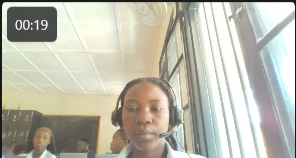

WELCOME TO MY PORTFOLIO
I am passionate about learning, project management, data, and creating meaningful impact through my Community.

GET TO KNOW ME
My name is Sandrine Tuyizere. I am a graduate of African Leadership University with a Bachelor's degree in Entrepreneurial Leadership.
I am passionate about continuous learning and professional development. I am currently developing my skills in Monitoring, Evaluation and Learning (MEL) and project management.
I am a hardworking, adaptable and motivated person who enjoys working with others, solving problems and taking on new challenges.
MY PROFESSIONAL JOURNEY
December 2025 – June 2026
MY ACADEMIC BACKGROUND
2026
Relevant areas of study include Data Analytics, Business Management, Financial Calculations and Customer Service.
WHAT I CAN DO
Project Coordination, Project Support, MEL and Documentation.
Data Entry, Data Management, Microsoft Excel, Power BI and Basic Data Analysis.
Communication, Teamwork, Problem-Solving, Time Management and Adaptability.
Initiative, Accountability, Team Coordination and Entrepreneurship.
MY PROFESSIONAL DEVELOPMENT
Challenges Rwanda
Harambee – 4-Week Program
KLab Academy – 2026
DIA Student Association – 2025
WHAT I CARE ABOUT
LET'S CONNECT
I am open to professional internship opportunities, learning experiences and meaningful collaborations.
Email: tuyizeresandra3@gmail.com
Phone: +250 798 024 962